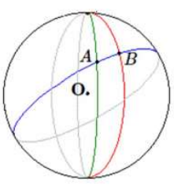

Dès l’Antiquité, des observations de différentes natures ont permis de conclure que la Terre était sphérique, alors même que, localement, elle apparaît plane dans la plupart des expériences quotidiennes. Cette forme sphérique est une conséquence de l’attraction gravitationnelle. Historiquement, des méthodes géométriques ont permis de calculer la longueur d’un méridien (environ 40 000 km) à partir de mesures d’angles ou de longueurs : méthodes d’Ératosthène et de triangulation plane.
On repère un point à la surface de la Terre par deux coordonnées angulaires, sa latitude (φ), sa longitude (L), et par son altitude par rapport à un niveau de référence. Le plus court chemin entre deux points à la surface de la Terre, assimilée à une sphère parfaite, est l’arc du grand cercle qui les relie (cercle contenant les deux points A, B et le centre O de la Terre).
